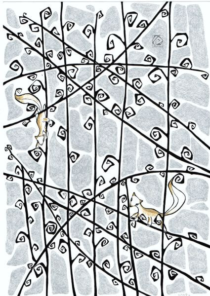
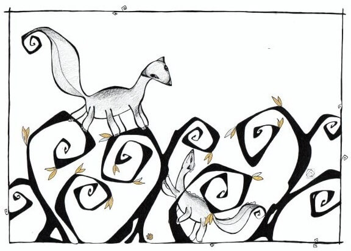

Мой Мир

У меня есть одна необычная способность.
Я вижу другой мир.
Он сильно отличается от нашего и населён разнообразной жизнью.
Первый раз я обнаружила его ещё в детстве и тогда же поняла, что больше никто его не видит.
Этот удивительный мир я назвала - Левитатум. За многие годы у меня накопились образы, истории, наблюдения, которыми пришло время поделиться с вами.
Они

Заглядывая в мир Левитатум, я чаще вижу вот этих существ.
Они самая многочисленная форма жизни.
Как их зовут.

Никому не рассказывая о мире Левитатум, мне не было нужды именовать его обитателей. Когда же появилось желание делиться этими историями, я поняла, что нужно будет их как-то называть.
Около года я ломала голову и подбирала варианты названий главным жителям мира Левитатум. Их было сотни.. Я пробовала разные подходы. Искала в других языках. Миксовала слова. Пробовала случайный подбор букв. Все тщетно! Ни один вариант так и не лёг, не прижился.
Несколько раз я забрасывала эту идею «на дальнюю полку», надеясь, что подсознание все сделает само. Знаете, так бывает? Этот трюк так же не помог.
Ах, так! – обижалась я, - Не хотите называться, останетесь просто Неведомыми Зверюшками!
Но скоро, с энтузиазмом, вновь пыталась понять, как же называются они на человеческом?
И вот сегодня, как раз к запланированному посту (концовка которого должна была быть другой) я наконец поняла что они..
.. Левитяне! А если ласково – Левитятки))) И никак иначе )))
И ведь это слово лежало на поверхности.